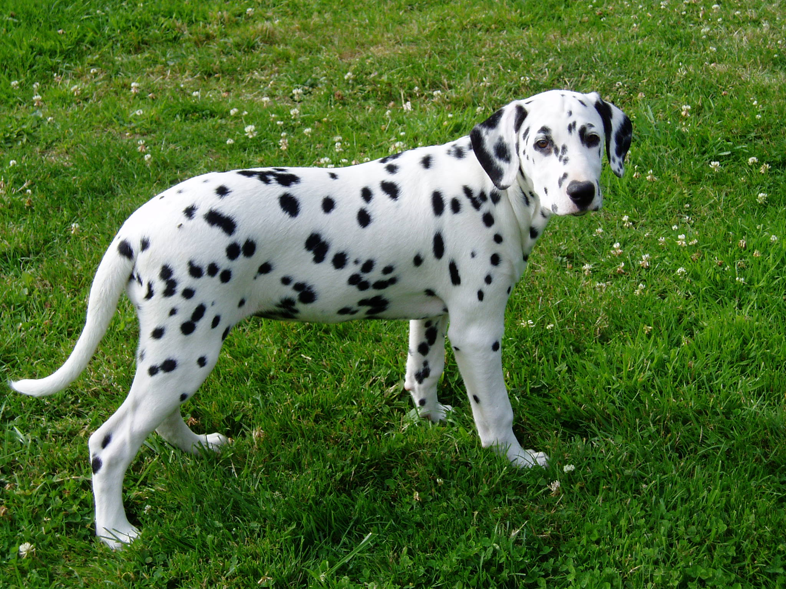
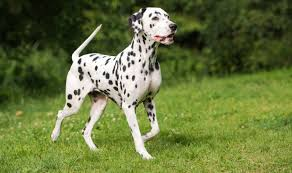

- Tên: Chó đốm hay còn gọi là chó Dalmatian (tiếng Croatia: Dalmatinac, Dalmatiner) là một giống chó nhà có nguồn gốc từng vùng Dalmatia (một phần của lãnh thổ Croatia), nơi mà giống chó này được tìm thấy[1] với đặc trưng là thân hình có những đốm đen trên nền lông trắng, giống chó này thường được gọi là bánh Pudding nhân nho khô vì bộ lông đốm của chúng. Nguồn gốc của chúng là giống chó kéo xe và chó săn mùi. Chó đốm là một loại chó cưng trong nhà chúng rất năng động và thích chạy. Chó đốm được biết đến nhiều thông qua bộ phim hoạt hình nổi tiếng 101 chú chó đốm.
- Giới thiệu: Nguồn gốc của chó Đốm đang tranh cãi. Dấu vết của chúng bắt nguồn từ thời kỳ Hy lạp cổ đại. Giống chó này trở nên nổi tiếng như giống chó hộ vệ cho các xe ngựa kéo vào những năm 1800. Chúng chạy song song với cỗ xe ngựa và canh gác cả xe lẫn ngựa những lúc chủ nhân vắng mặt. Chúng luôn luôn theo sát gót chủ nhân bất kể khi ông ta đi bộ, cưỡi ngựa hay ngồi trên xe. Những chú chó Đốm linh hoạt được sử dụng vào rất nhiều việc khác nhau như bùa hộ mệnh cho lính cứu hoả, lính canh gác trong chiến tranh, biểu diễn các tiết mục xiếc, chó săn, chó bảo vệ.
- Trước đây, chúng là những con chó được nuôi để chạy trước xe ngựa kéo và sẽ sủa báo hiệu khi có chướng ngại vật trên đường hay để mọi người tản ra tránh đường cho xe chạy, với mục đích này chúng được coi như là những chiếc còi báo hiệu, ngày nay, phương tiện đã hiện đại và lẽ tất nhiên là chúng không còn được sử dụng cho mục đích này mà thay vào đó là như những người bạn trong gia đình ở nhiều nước Âu-Mỹ do tính khí thân thiện của chúng với con người.
Hình ảnh minh họa

